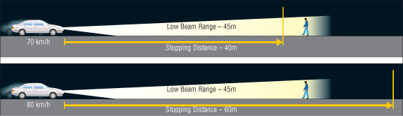
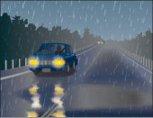

At night and in weather conditions such as rain, snow or fog, you cannot see as far ahead, even with headlights. Slow down when driving at night, especially on unlit roads and whenever weather conditions reduce your visibility.
Overdriving your headlights
You are overdriving your headlights when you go so fast that your stopping distance is farther than you can see with your headlights. This is a dangerous thing to do, because you may not give yourself enough room to make a safe stop. Reflective road signs can mislead you as well, making you believe you can see farther than you really can. This may cause you to over-drive your headlights if you are not careful (Diagram 2-58).

Diagram 2-58
Glare
Glare is dazzling light that makes it hard for you to see and be aware what others around you are doing. It can be a problem on both sunny and overcast days, depending on the angle of the sun’s rays and your surroundings. Glare can also be a problem at night when you face bright headlights or see them reflected in your rear view mirror.
When meeting oncoming vehicles with bright headlights at night, look up and beyond and slightly to the right of the oncoming lights. In daytime glare, use your sun visor or keep a pair of good quality sunglasses in your vehicle. When you enter a tunnel on a bright day, slow down to let your eyes adjust to the reduced light. Remove your sunglasses and turn on your headlights.
Cut down glare at night by following the rules of the road for vehicle lights. Use your low-beam headlights within 150 metres of an oncoming vehicle or when following a vehicle within 60 metres. On country roads, switch to low beams when you come to a curve or hilltop so you can see oncoming headlights and won't blind oncoming drivers. If you can't see any headlights, switch back to high beams.
Fog
Fog is a thin layer of cloud resting on the ground. Fog can reduce visibility for drivers, resulting in difficult driving conditions.
The best thing to do is to avoid driving in fog. Check weather forecasts and if there is a fog warning, delay your trip until it clears. If that is not possible or you get caught driving in fog, there are a number of safe driving tips you should follow. If visibility is decreasing rapidly, move off the road and into a safe parking area to wait for the fog to lift.
Tips for driving safely in fog
Before you drive - and during your trip - check weather forecasts. If there is a fog warning, delay your trip until it clears. If you are caught driving in fog, follow these safe-driving tips:
DO:
- Slow down gradually and drive at a speed that suits the conditions.
- Make sure the full lighting system of your vehicle is turned on.
- Use your low-beam headlights. High beams reflect off the moisture droplets in the fog, making it harder to see.
- If you have fog lights on your vehicle, use them, in addition to your low beams.
- Be patient. Avoid passing, changing lanes and crossing traffic.
- Use pavement markings to help guide you. Use the right edge of the road as a guide, rather than the centre line.
- Increase your following distance. You will need extra distance to brake safely.
- Look and listen for any hazards that may be ahead.
- Reduce the distractions in your vehicle. For example, turn off the cell phone. Your full attention is required.
- Watch for any electronically operated warning signs.
- Keep looking as far ahead as possible.
- Keep your windows and mirrors clean. Use your defroster and wipers to maximize your vision.
- If the fog is too dense to continue, pull completely off the road and try to position your vehicle in a safe parking area. Turn on your emergency flashers, in addition to keeping on your low-beam headlights.
Don’t:
- Don't stop on the travelled portion of the road. You could become the first link in a chain-reaction collision.
- Don't speed up suddenly, even if the fog seems to be clearing. You could find yourself suddenly back in fog.
- Don't speed up to pass a vehicle moving slowly or to get away from a vehicle that is following too closely.
REMEMBER:
- Watch your speed. You may be going faster than you think. If so, reduce speed gradually.
- Leave a safe braking distance between you and the vehicle ahead.
- Remain calm and patient. Don't pass other vehicles or speed up suddenly.
- Don't stop on the road. If visibility is decreasing rapidly, pull off the road into a safe parking area and wait for the fog to lift.
- Use your low-beam lights.
Rain
Rain makes road surfaces slippery, especially as the first drops fall. With more rain, tires make less contact with the road. If there is too much water or if you are going too fast, your tires may ride on top of the water, like water skis. This is called hydroplaning. When this happens, control becomes very difficult. Make sure you have good tires with deep tread, and slow down when the road is wet.
Rain also reduces visibility. Drive slowly enough to be able to stop within the distance you can see. Make sure your windshield wipers are in good condition. If your wiper blades do not clean the windshield without streaking, replace them.
In rain, try to drive on clear sections of road. Look ahead and plan your movements. Smooth steering, braking and accelerating will reduce the chance of skids Leave more space between you and the vehicle ahead in case you have to stop. This will also help you to avoid spray from the vehicle ahead that can make it even harder to see.
Avoid driving in puddles. A puddle can hide a large pothole that could damage your vehicle or its suspension, or flatten a tire. The spray of water could obstruct the vision of adjacent motorists and result in a collision, cause harm to nearby pedestrians or drown your engine, causing it to stall. Water can also make your brakes less effective.

Diagram 2-59
Flooded roads
Avoid driving on flooded roads, water may prevent your brakes from working. If you must drive through a flooded stretch of road, test your brakes afterward to dry them out. Test your brakes when it is safe to do so by stopping quickly and firmly at 50 km/h. Make sure the vehicle stops in a straight line, without pulling to one side. The brake pedal should feel firm and secure, not spongy, that’s a sign of trouble. If you still feel a pulling to one side or a spongy brake pedal even after the brakes are dry, you should take the vehicle in for repair immediately.
Skids
A skid may happen when one or more tires lose their grip with the road’s surface. Skids most often happen on a slippery surface, such as a road that is wet, icy or covered with snow, gravel or some other loose material. Most skids result from driving too fast for road conditions. Hard braking and overly aggressive turning or accelerating can cause your vehicle to skid and possibly go out of control.
To avoid a skid on a slippery road, drive at a reduced speed and operate the vehicle’s controls in a smooth and constrained manner. Increasing tire forces, such as by braking or accelerating while steering may push tires even closer to a skid condition. It’s essential that the vehicle’s speed be maintained at a safe level and that turns be made gently.
If your vehicle begins to skid, try not to panic - it is possible to maintain control of your vehicle, even in a skid. Ease off on the accelerator or brake and on a very slippery surface slip the transmission into neutral if you can. Continue to steer in the direction you wish to go. Be careful not to oversteer. Once you regain control, you can brake as needed, but very gently and smoothly.
Anti-lock braking systems (ABS)
If your vehicle is equipped with anti-lock brakes, practise emergency braking to understand how your vehicle will react. It is a good idea to practise doing this under controlled conditions with a qualified driving instructor.
ABS is designed to sense the speed of the wheels on a vehicle during braking. An abnormal drop in wheel speed, which indicates potential wheel lock, causes the brake force to be reduced to that wheel. This is how ABS prevents tire skid and the accompanying loss of steering control. This improves vehicle safety during heavy brake use or when braking with poor traction.
Although anti-lock braking systems help to prevent wheel lock, you should not expect the stopping distance for your vehicle to be shortened.
Drivers unfamiliar with anti-lock braking may be surprised by the pulsations that they may feel in the brake pedal when they brake hard. Make sure you know what to expect so you will not be distracted by the pulsation or tempted to release the pedal during emergency braking manoeuvres.
Threshold braking
Threshold braking should bring you to a reasonably quick controlled stop in your own lane, even in slippery conditions. This technique is generally practised in a vehicle that is not equipped with ABS. Brake as hard as you can until a wheel begins to lock up, then release pressure on the pedal slightly to release the wheel. Press down on the brake pedal, applying as much braking force as possible without inducing a skid. If you feel any of the wheels begin to lock up, release the brake pressure slightly and re-apply. Don't pump the brakes. Continue braking this way until you have slowed the vehicle to the desired speed.
Vehicles equipped with ABS should provide controlled braking on slippery surfaces automatically. Press the brake pedal hard and allow the system to control wheel lock-up.
Snow
Snow may be hard-packed and slippery as ice; rutted, full of hard tracks and gullies; or smooth and soft. Look ahead and anticipate what you must do based on the conditions. Slow down on rutted, snowy roads. Avoid sudden steering, braking or accelerating that could cause a skid. Do not use cruise control during times of snow and other inclement weather.
Whiteouts
Blowing snow may create whiteouts where snow completely blocks your view of the road. When blowing snow is forecast, drive only if necessary and with extreme caution.
Tips for driving in blowing snow and whiteout conditions
Before you drive - and during your trip - check weather forecasts and road reports. If there is a weather warning, or reports of poor visibility and driving conditions, delay your trip until conditions improve, if possible. If you get caught driving in blowing snow or a whiteout, follow these safe driving tips:
DO:
- Slow down gradually and drive at a speed that suits the conditions.
- Make sure the full lighting system of your vehicle is turned on.
- Use your low-beam headlights. High beams reflect off the ice particles in the snow, making it harder to see. If you have fog lights on your vehicle, use them, in addition to your low beams.
- Be patient. Avoid passing, changing lanes and crossing traffic.
- Increase your following distance. You will need extra space to brake safely.
- Stay alert. Keep looking as far ahead as possible.
- Reduce the distractions in your vehicle. Your full attention is required.
- Keep your windows and mirrors clean. Use defroster and wipers to maximize your vision.
- Try to get off the road when visibility is near zero. Pull into a safe parking area if possible.
DON'T:
- Don't stop on the travelled portion of the road. You could become the first link in a chain-reaction collision.
- Don't attempt to pass a vehicle moving slowly or speed up to get away from a vehicle that is following too closely.
REMEMBER:
- Watch your speed. You may be going faster than you think. If so, reduce speed gradually.
- Leave a safe braking distance between you and the vehicle ahead.
- Stay alert, remain calm and be patient.
- If visibility is decreasing rapidly, do not stop on the road. Look for an opportunity to pull off the road into a safe parking area and wait for conditions to improve.
- If you become stuck or stranded in severe weather, stay with your vehicle for warmth and safety until help arrives. Open a window slightly for ventilation. Run your motor sparingly. Use your emergency flashers.
- Be prepared and carry a winter driving survival kit that includes items such as warm clothing, non-perishable energy foods, flashlight, shovel and blanket.
- It is important to look ahead and watch for clues that indicate you need to slow down and anticipate slippery road conditions.
Ice
As temperatures drop below freezing, wet roads become icy. Sections of road in shaded areas or on bridges and overpasses freeze first. It is important to look ahead, slow down and anticipate ice. If the road ahead looks like black and shiny asphalt, be suspicious. It may be covered by a thin layer of ice known as black ice. Generally, asphalt in the winter should look gray-white in colour. If you think there may be black ice ahead, slow down and be careful.
Snow plows
Snow-removal vehicles on public roadways are equipped with flashing blue lights that can be seen from 150 metres.
Flashing blue lights warn you of wide and slow-moving vehicles: some snow plows have a wing that extends as far as three metres to the right of the vehicle. On freeways, several snow plows may be staggered across the road, clearing all lanes at the same time by passing a ridge of snow from plow to plow. Do not try to pass between them. This is extremely dangerous because there is not enough room to pass safely, and the ridge of wet snow can throw your vehicle out of control.
Summary
By the end of this section, you should know:
- How to identify and manage situations where your visibility may be reduced
- How weather conditions such as rain, flooded roads, snow and ice may affect your vehicle and your ability to control it
- What to do if your vehicle skids or if you encounter heavy snow, whiteouts or black ice
- How to recognize and share the road with snow removal vehicles